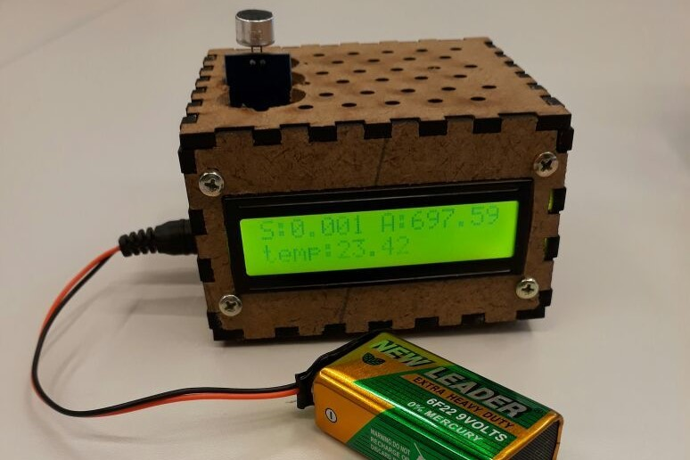

O projeto criado para a matéria chamada Modelagem e Simulação tem como finalidade implementar conhecimentos de física e programação para modelar uma situação física em Python. No projeto do qual participei, foi modelado a força G da Centrifuga Tsf-18, uma centrifuga russa utilizada por astronautas para criar resistência à força G.
Como resultados obtivemos uma função que retorna a força G pelo tempo e assim pudemos determinar diversas variáveis, como por exemplo, quanto tempo uma pessoa demora para desmaiar ou também morrer, podendo, por exemplo, evitar que isto aconteça.
Neste projeto estudamos os impactos e a relação que a tecnologia possui na sociedade. Meu projeto foi o estudo e analise do impacto que a empresa Apple causou no design e na revolução dos dispositivos. Neste projeto descobrirmos que a Apple não criou nada, mas sim soube copiar a ideia de outras pessoas e modifica-las ou melhorar-las para entregar um produto diferenciado e revolucionário no mercado, ganhando da concorrência e assim atingindo o marco de empresa com maior valor no mercado financeiro e pioneira em revolução e mudanças tecnológicas. Hoje a empresa se encontra em decadência após a morte de seu fundador e visionário Steve Jobs, perdendo espaço para grandes marcas como a Sony e a Samsung e apresentando produtos sem grandes mudanças e com baixíssimo custo benéfico.

O projeto de eletrônica tinha como objetivo nos introduzir ao conceito de elétrica e a utilização do Arduino, dispositivo Italiano que ajuda no processamento de tarefas e facilita na parte elétrica do circuito. O projeto era sobre a fabricarão e funcionamento de uma estação metrológica medindo diversos eventos como temperatura, qualidade do ar, humidade entre outros mostrando os resultados em um monitor para o usuário.
O projeto de programação tinha o intuito de ensinar e utilizar a programação em Python para poder aprender a lógica do código e sua funcionalidade. Neste projeto o desafio era a criação de um jogo funcional de corrida apelidado de TimeRace em que os jogadores tinham que competir para fazer o melhor tempo com tipos diferentes de carros.
Este projeto é constituído por um brinquedo bio-inspirado cujo objetivo era auxiliar o desenvolvimento tanto motor quanto cognitivo de uma criança da faixa etária de 6 a 8 anos.
Para isto, primeiramente foi feita uma pesquisa para se direcionar e compreender qual a etapa em que o público alvo está no quesito do desenvolvimento cognitivo e motor. Contendo estas informações foi desenvolvido um projeto nomeado Mazoo, o qual foi criado utilizando madeira (MDF) cortada na máquina a laser e tem como objetivo levar uma bola de um ponto A à um ponto B movendo dois braços os quais alteram inclinação da plataforma cuja bola esta situada.